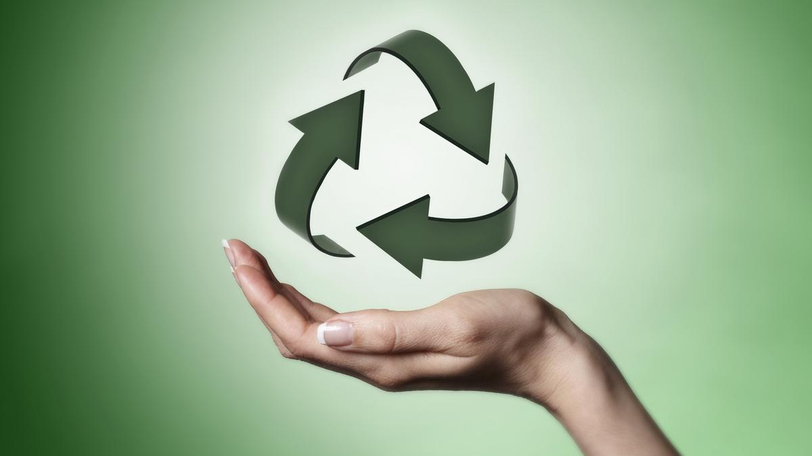
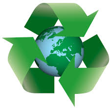

Who We Are
This is a teen boutique for all teens. It includes seasional trends that will forsure make your whole wardrobe pop. Thats not even the best thing, Ana's boutique is all made from recycle, this allowing us to be more aware of our planet. If you want to help out our planet then don't hesitate to buy from this boutique. In the past week we have been able to collect 2 tons of recycle! Thanks to everyone who supports!


Save your Planet
Save Your Environment